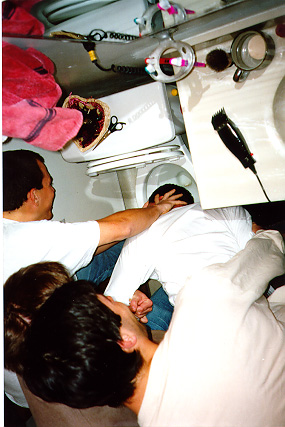
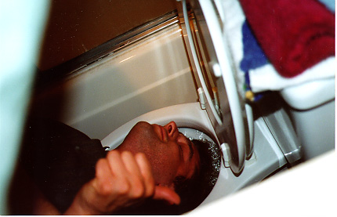
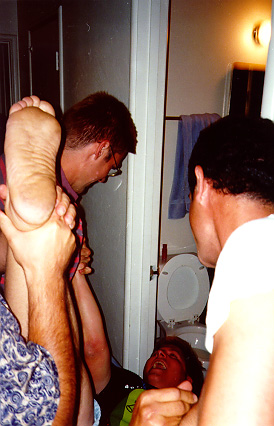
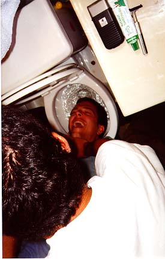
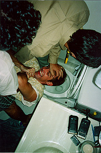
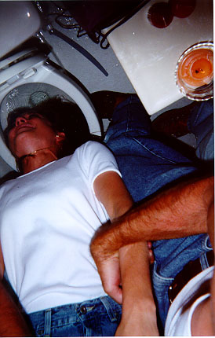
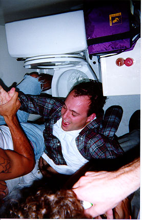

|  | This was the original swirl that started it all off. We were playing "How Little Would It Take?" Lou offered Matt $100,000 to take a swirl, it gradually got bid down by people who would take a swirl for less money. Matt received $200 for this one (though he actually got a second the same night without making any money on that one.) | ||
|  | This is me getting a swirl on my birthday. Someone had asked what I wished for and in the true spirit of the game "Truth or Swirl" I decided not to answer but instead "Take the Swirl." Originally, I had been skeptical about it, but I found it to be very refreshing. | ||
| Originally, we weren't going to allow interns to get
swirled. Ross just wanted to be loved so much that we found it hard to
deny him; though we now require that people have washed their feet
sometime in the last month before we will swirl them in the future.
As Ross came back for a second internship, we are hoping to have a second picture of Ross getting swirled up here soon. |
 | ||
| Getting swirled is so exciting that even people who don't work at Netscape are starting to get into the action. In fact, Paul was so impressed by his swirl, shown here, that soon after he quit his job and came to work at Netscape. |  | ||
|
 You can see Aleks on the giving end of a swirl up in Ross's picture; I'll let Aleks comment as to whether its better to give than receive. This swirl took place at our recent "Stupid Party" where everyone had to bring something stupid to get in. You can see the yellow combination soap-bubble / writing pen around Lou's neck and also a set of cheezy plastic rings on Aleks' fingers. | |||
| 
History was made recently with the first ever recorded "chick swirl". Having never attended a Channing Palace Party before, and so unaware of just how stupid things could get, she foolishly agreed to be swirled for the paltry sum of $500.  When the time came, she tried to renegotiate for more cash, but to no avail. It took all of about 2 minutes to raise the necessary funds. Since April was such a good sport about getting swirled we immediately swirled her husband Judd. He struggled a lot more than she did (since his was for free) but he supplied the Netscape connection that got Apirl introduced to the practice of swirling in the first place. | |||